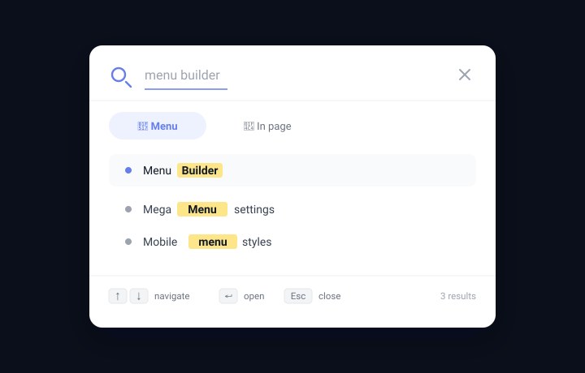

Search
Add a search icon to your navigation bar that opens a modal search overlay. Search menu links or find text on the current page — all without leaving the page.

Enabling search
- Go to Menu Builder → Search.
- Toggle Show search icon.
- Save settings.
A magnifier icon appears in the navigation bar (position configurable, see below). Clicking it opens a full-screen or centered search overlay.
Search tabs
The search modal has two tabs:
| Tab | How it works |
|---|---|
| Menu | Filters the menu links as you type. Matching items are highlighted; non-matching items are hidden. No server request needed. |
| In page | Searches for text on the currently visible page. Matching occurrences are highlighted in the document and a navigation bar appears so you can jump between results. |
Keyboard shortcuts
Once the search modal is open, you can operate it entirely from the keyboard:
| Key | Action |
|---|---|
| ↑ / ↓ | Move through the results |
| Enter | Open the highlighted result |
| Escape | Close the search modal |
The modal is opened by clicking the search icon in the navigation bar. These keyboard shortcuts become active while the modal is open.
Search icon appearance
In Menu Builder → Search you can configure:
- Icon colour — custom colour for the magnifying-glass icon in the nav bar.
- Position — whether the search icon appears on the left or the right side of the nav bar.